Creá un futuro más verde
Aportá frescura y bienestar a tu hogar con nuestras plantas seleccionadas de fácil cuidado.
- Ideal
- 55 a 70% humedad
- Fácil de cuidar
Las más populares de BONSAI
-
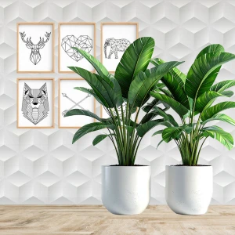
Plantas para interiores
Opciones ideales para sumar frescura, equilibrio y vida a cualquier ambiente.
Conocer más -
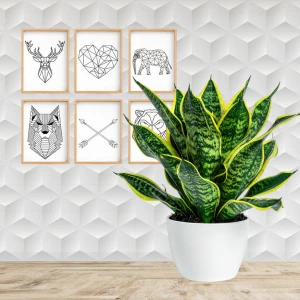
Macetas sustentables
Diseños simples y funcionales que acompañan la estética natural de cada espacio.
Conocer más -
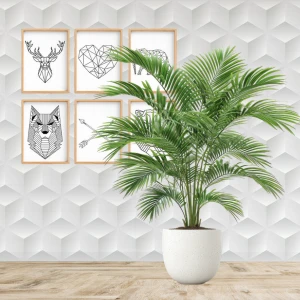
Asesoramiento experto
Consejos prácticos para ayudarte a elegir, ubicar y cuidar mejor tus plantas.
Conocer más
Condiciones ideales
-
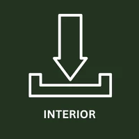
Productos destacados
-
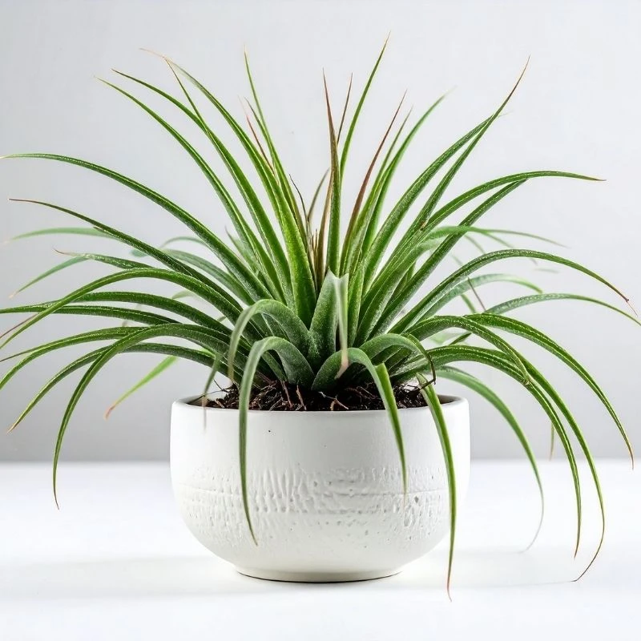
Cinta Libre
Ideal para escritorios y espacios pequeños.
Conocer más -
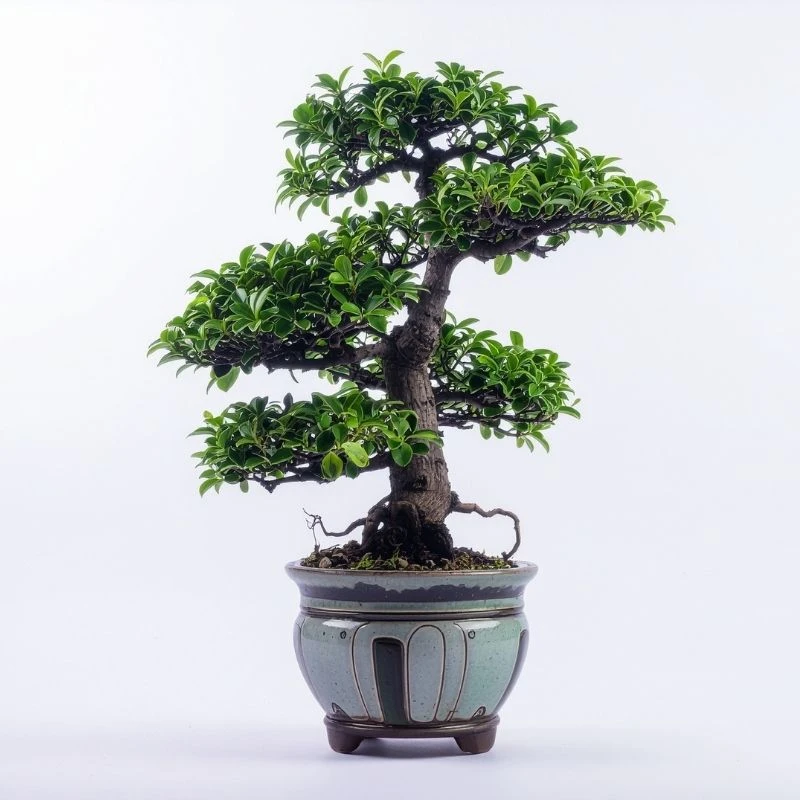
Bonsái Natura
Una opción fresca para interiores luminosos.
Conocer más -
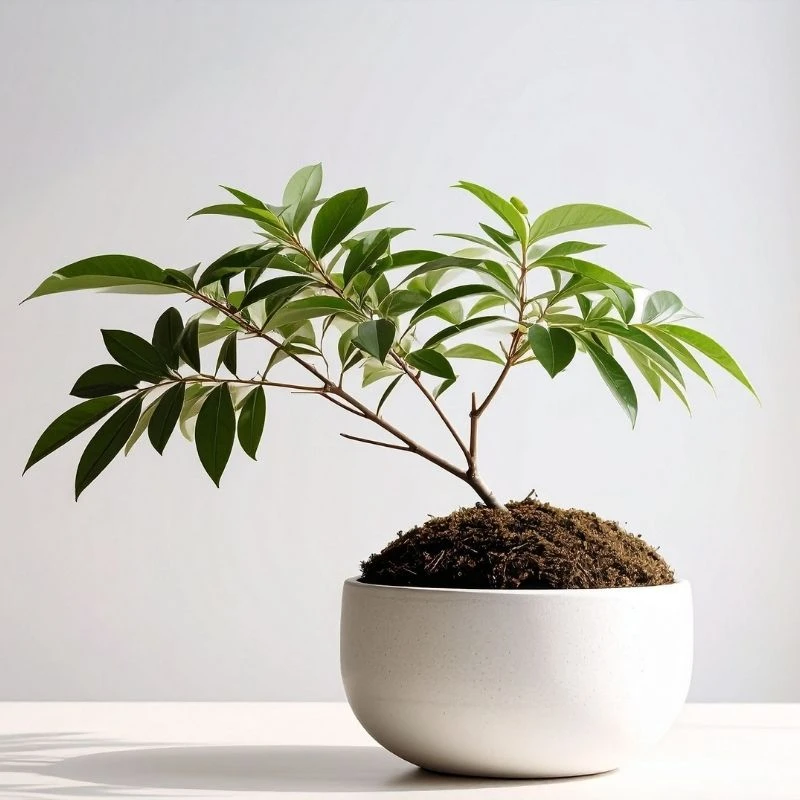
Bonsái Vida
Aporta verde y bienestar a cualquier ambiente.
Conocer más
Espacios BONSAI
-
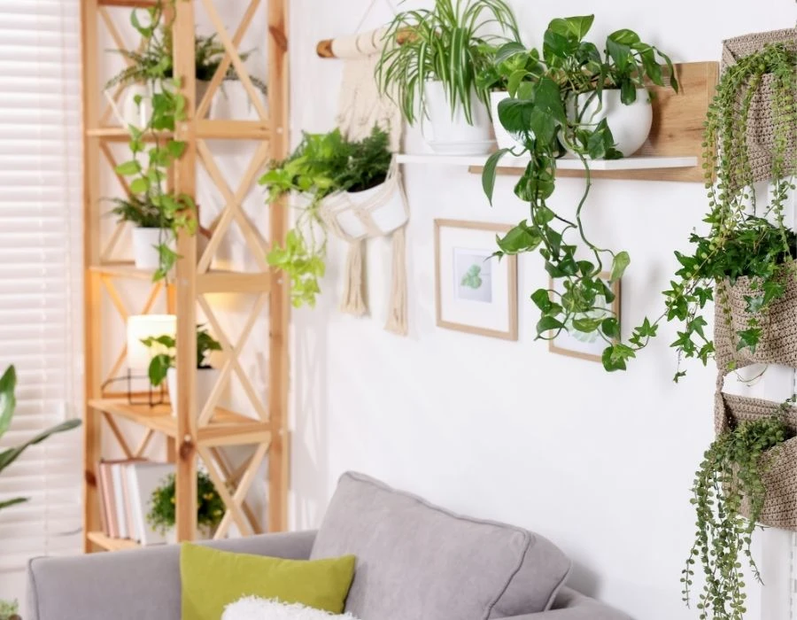
Living natural
Una composición pensada para sumar frescura y armonía al espacio principal del hogar.
-
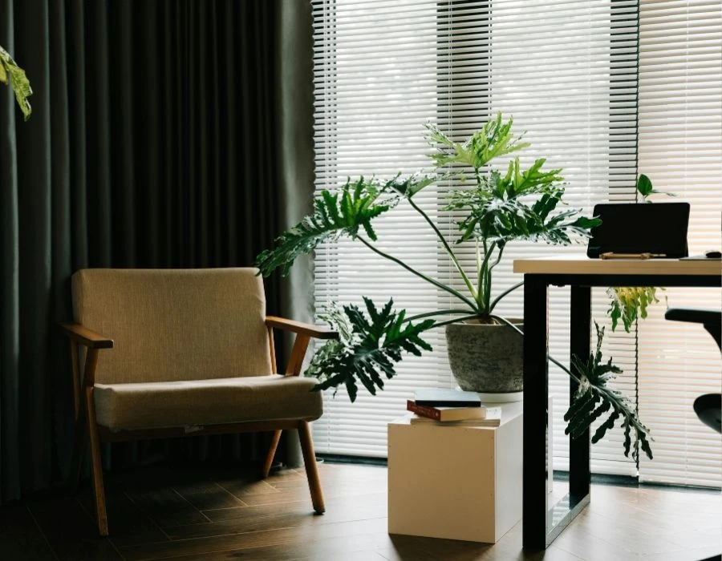
Rincón de trabajo
Plantas pequeñas y funcionales para acompañar escritorios, estudios y mesas de apoyo.
-
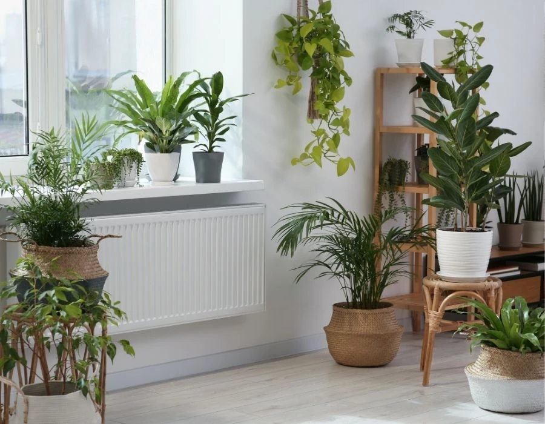
Dormitorio verde
Una propuesta suave para generar calma, bienestar visual y una atmósfera más relajada.
-
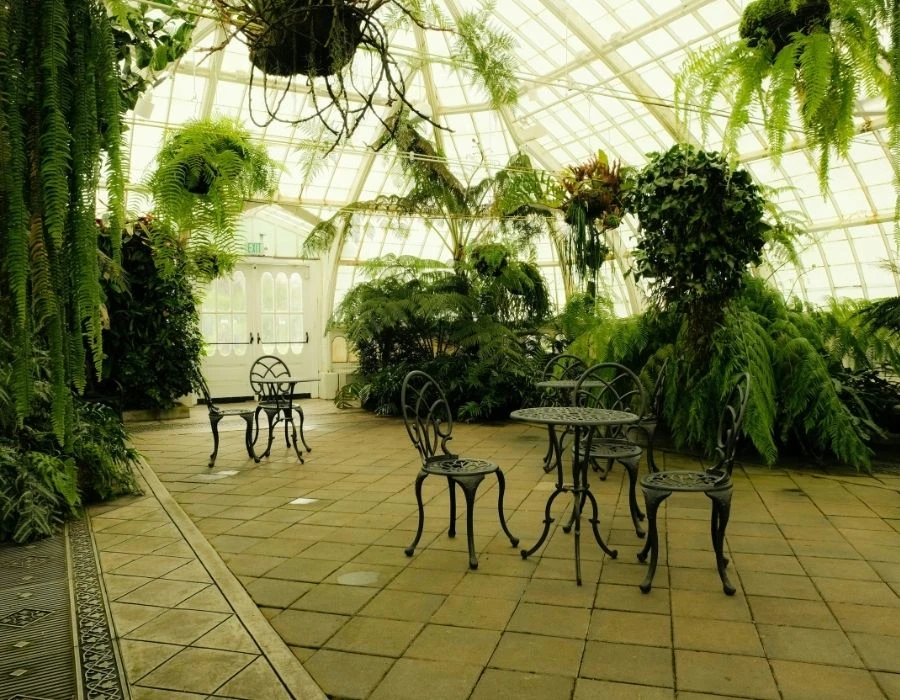
Composición botánica
Una forma de combinar macetas, alturas y follajes para crear un rincón con identidad propia.
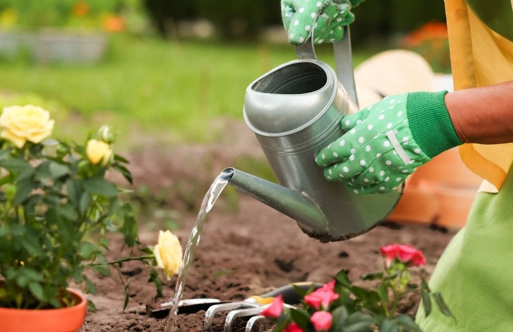
Nuestra historia
BONSAI nace de la idea de acercar la naturaleza a la vida cotidiana de una forma simple, armónica y accesible. Creemos que una planta no es solo un objeto decorativo, sino una presencia viva que transforma los espacios, mejora el ánimo y genera una conexión más auténtica con el entorno. Por eso seleccionamos especies pensadas para adaptarse a interiores, acompañadas por macetas y propuestas visuales que combinan diseño, calma y bienestar. Nuestro objetivo es que cada persona pueda crear un rincón verde propio, sin necesidad de ser experta, incorporando frescura, equilibrio y belleza natural a su casa, estudio o lugar de trabajo. En BONSAI entendemos el cuidado de las plantas como una experiencia cotidiana que invita a bajar el ritmo, observar más y habitar mejor cada espacio.
Leer más